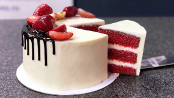

Торт “Красный бархат”
Чем ближе День всех Влюбленных, тем чаще вы задаете себе вопрос, что же подарить любимой половинке в этот романтический день. Мы подготовили для вас рецепт чрезвычайно красивого и вкусного торта “Красный бархат”. Яркий цвет рыхлых, как тучка, коржей с нежным творожным кремом просто тает во рту. Этот торт станет вашим лучшим подарком, который вы будете смаковать с бокалом игристого.
Цена: 50 евро